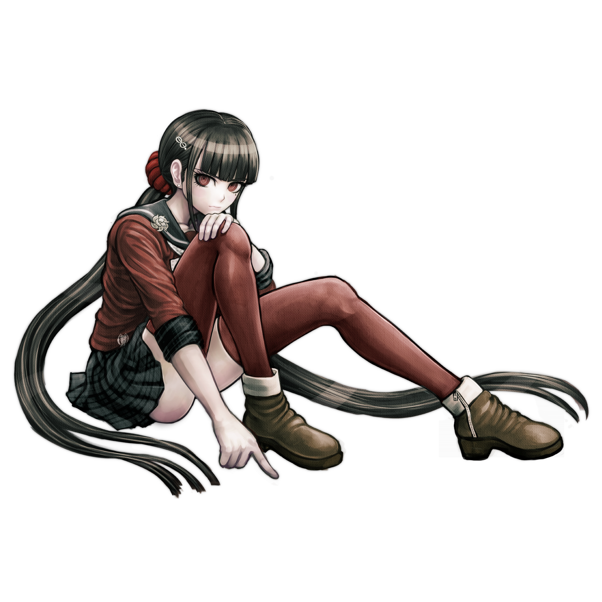

Maki Harukawa
Maki Harukawa (春川 魔姫) is a student in the Ultimate Academy for Gifted Juveniles and a participant of the Killing School Semester featured in Danganronpa V3: Killing Harmony. Her title is the Ultimate Child Caregiver (超高校級の「保育士」 lit. Super High School Level Nursery School Teacher).
